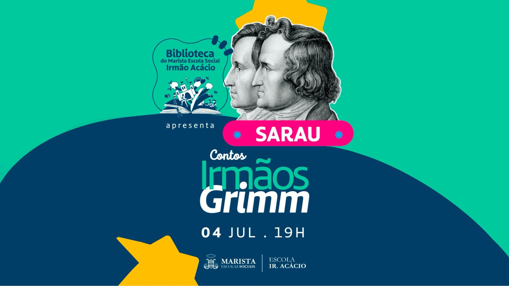
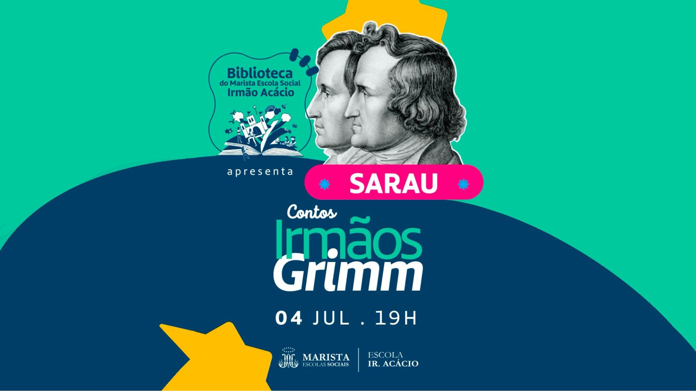

Ao longo do primeiro semestre de 2025, os alunos do Marista Escola Social Ir. Acácio desenvolveram
projetos voltados à 30ª Conferência das Partes (COP), que ocorrerá em novembro, na cidade de Belém
Ler mais
 1.png )

.jpg) 

projetos voltados à 30ª Conferência das Partes (COP), que ocorrerá em novembro, na cidade de Belém
Ler mais
O documentário Homem com H, dirigido por Esmir Filho, revela mais do que a trajetória artística de Ney Matogrosso — ele nos convida a contemplar um ser humano que fez da arte um ato de liberdade. Com sua presença marcante, Ney rompeu padrões e se firmou como uma das figuras mais expressivas da cultura brasileira...
Continuar lendo
Que Horas Ela Volta?, dirigido por Anna Muylaert, é um dos filmes brasileiros mais impactantes da última década. Através da história de Val, uma empregada doméstica que trabalha há anos na casa de uma família rica em São Paulo, o filme discute desigualdade social, relações de classe e o lugar que se espera que cada um ocupe dentro dessa estrutura. ...
Continuar lendo
Na madrugada dos dias 27 para 28 de junho, o Colégio Santa Maria, em Curitiba, foi palco do Hackathon Programar, um evento que reuniu estudantes apaixonados por tecnologia para desenvolver projetos inovadores...
Continuar lendo
A Escola Social Marista Irmão Acácio realizou, no dia 6 de junho, sua tradicional festa junina, organizada pela coordenação do colégio. O evento contou com diversas comidas típicas, como cachorro-quente, paçoca, pé de moleque, canudo de doce de leite, pastel e outras...
Continuar lendo
O Dia dos Namorados, comemorado em 12 de junho, é uma data feita para celebrar o amor em todas as suas formas. É quando os corações...
Continuar lendo
No dia 14 de junho, ocorreu em nossa escola o Dia D Voluntariado, que reuniu os participantes da PJM do Colégio Marista Londrina e da Escola Social Marista Ir. Acácio...
Continuar lendo
“Os Jogos Escolares: uma celebração inclusiva de esporte e união escolar, promovida pela colaboração entre a Pastoral e a escola, onde alunos de diferentes níveis e gêneros se destacam no vôlei e no futebol.”...
Continuar lendo
“Nos Jogos Escolares, Wagner desempenhou um papel crucial como um dos juízes, marcando os pontos com precisão e garantindo a justiça nas competições. Sua atuação foi fundamental para o sucesso do evento, proporcionando uma experiência esportiva memorável para todos os participantes.”...
Continuar lendo Gazeta Marista: Você é árbitro há quanto tempo?
Gustavo: Bom dia. Hoje é o meu primeiro jogo como árbitro, mas sou professor de
futsal,
então estou bastante envolvido com o futebol.
...
“Gabriella Ciotto, atualmente professora de Português, já foi educadora social. Formada em Letras – Português, é pós-graduada em Direitos Humanos e Questões Sociais. Em nossa escola, sua trajetória começou com um estágio obrigatório da faculdade, em 2016. Após...
Continuar lendo
Ao longo do primeiro semestre de 2025, os alunos do Marista Escola Social Ir. Acácio desenvolveram projetos voltados à 30ª Conferência das Partes (COP)...
Continuar lendo
“Nos Jogos Escolares, Gabriela Bodon desempenhou um papel abrangente como árbitra, apoiando os jogadores, organizando o evento e oferecendo apoio moral...
Continuar lendo
Na manhã de segunda-feira (9) e terça-feira (10), alunos do segundo e terceiro ano do Ensino Médio da Escola Social Marista Ir. Acácio participaram de um projeto de extensão com estudantes do curso de Direito da PUC. ...
Continuar lendo.jpg)
A indústria da moda tem exercido uma influência significativa nos padrões estéticos da sociedade desde o século passado, exibindo visuais muitas vezes irreais. Esse impacto é especialmente notável...
Continuar lendo
Na última semana, os alunos do 2º ano do Ensino Médio da Marista Escola Social

No dia 3 de abril, três alunos da nossa escola foram convidados a participar do
Continuar lendo
O Projeto Rua, liderado pela educadora Priscila, está transformando a vida de
Continuar lendo
Poesia é um projeto do Serviço de Convivência do Irmão Acácio, voltado para as crianças
Continuar lendo
A trajetória do Irmão João é marcada pela vocação, educação e dedicação à
Continuar lendo
Faleceu no dia 21 de abril o Papa Francisco (nome de nascimento: Jorge Mario Bergoglio),
Continuar lendo
No dia 28 de março, a Marista Escola Social Irmão Acácio realizou um MeetUp
Continuar lendo
No dia 29 de abril, foi realizado, no espaço Papa Francisco (conhecido como “redondo”),
Continuar lendo
Os Jogos Escolares de Londrina e região aconteceram entre os dias 24 de março e
Continuar lendo
No dia 25 de março, o Marista Escola Social Irmão Acácio realizou um evento em homenagem às ações pastorais do colégio, que fortalecem vínculos e oferecem
Continuar lendo
A ideia de criar um Clube do Livro partiu da bibliotecária Tamires, que percebeu a necessidade de um projeto exclusivo da biblioteca escolar...
Continuar lendo
No dia 30 de novembro de 2024 (sábado) a Escola Social Marista Irmão Acácio sediou o evento de Hackeaton "GoIT", juntamente com a multinacional TCS para os alunos do segundo ano do Ensino Médio da instituição...
Continuar lendo
No dia 11 de fevereiro (terça-feira), duas funcionárias da empresa multinacional Tata realizaram uma palestra para o público feminino da Escola Social Marista Ir. Acácio...
Continuar lendo
No dia 21 de fevereiro, a Escola Social Marista Irmão Acácio recebeu a visita de uma importante iniciativa do projeto OAT, em parceria com uma Empresa Tecnológica...
Continuar lendo